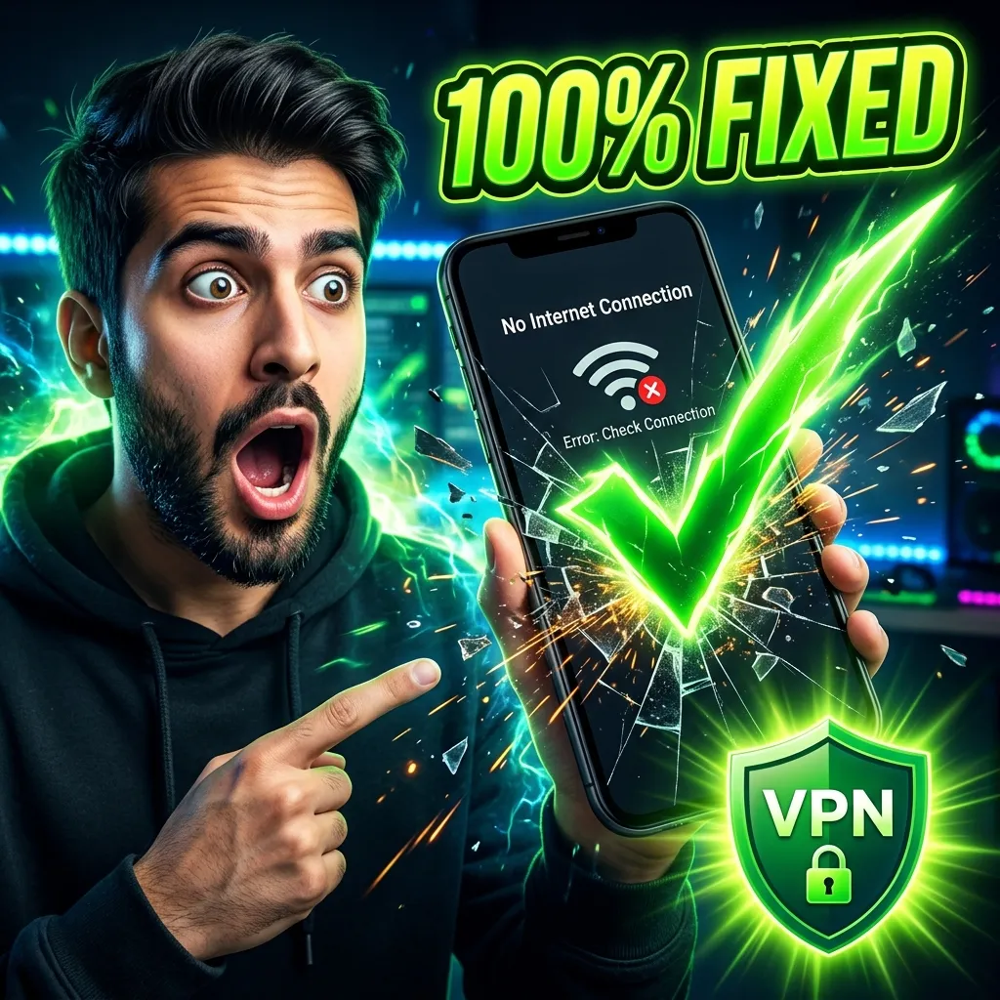

To fix the CapCut No Internet Connection error in India, you simply need to connect your phone or PC to a reliable VPN server in Singapore before opening the app. I do this every day, and it instantly loads all templates, effects, and animations without any lag.
Quick Facts:
If you live in India, you are definitely familiar with this annoying screen. You open CapCut, tap on a cool text animation or a trending filter, and a black box pops up saying "No Internet Connection". Meanwhile, your Wi-Fi is working perfectly fine for YouTube and WhatsApp.
This happens because the Indian government banned dozens of Chinese apps a few years ago, including CapCut (which is owned by ByteDance, the same company that owns TikTok). While you can still install the app using APK files, the Indian Internet Service Providers (ISPs) actively block CapCut's content servers. Your app simply cannot talk to the server to download the effects.
I edit reels on my phone every single day. Here is the exact process I use to bypass this block in 10 seconds. It works flawlessly every time.
1. Close the App: First, swipe CapCut completely out of your recent apps memory. It must not be running in the background.
2. Get a VPN: Download a free VPN from the Play Store or App Store. I personally use "Turbo VPN" or "Secure VPN" because they connect very fast.
3. Connect to Singapore: Open the VPN and select a server in Singapore. Singapore servers give the lowest ping and fastest download speeds for Indian users.
4. Open CapCut: Now, open the CapCut app again. When you tap on "Effects" or "Templates", they will load instantly as if the ban never existed.
I also do heavy editing on my Windows laptop. The mobile VPNs obviously do not work here. For PC, I downloaded "ProtonVPN" (which has a great free tier) or the "1.1.1.1 WARP" app by Cloudflare.
The rule is exactly the same: connect the desktop VPN first, wait for the green connection status, and then double-click the CapCut desktop icon. All your stickers, auto-captions, and AI transitions will sync immediately.
Here is something that confused me for a long time. I thought that by using a VPN, I could just use all the premium tools for free. I was wrong. The VPN only fixes the *connection* to the server so you can see and download the effects.
If you tap on an effect that has a small "Pro" tag in the corner, the VPN will let you add it to your timeline. But the moment you click the "Export" button, CapCut will block you and ask for money. If you somehow force the export, it will plaster a massive watermark on your video.
After getting frustrated with the Pro locks, I tried Mod APKs, which just gave my phone malware. Finally, I learned that you can just buy an official license using UPI. I bought my CapCut Pro upgrade from a trusted local reseller called JeetSoft for just ₹349.
Now, my workflow is perfect. I turn on my VPN to load the library, and because my account has the official Pro badge from JeetSoft, I can use every single premium template and effect and export it in 4K without any watermarks. No more errors, no more limits.